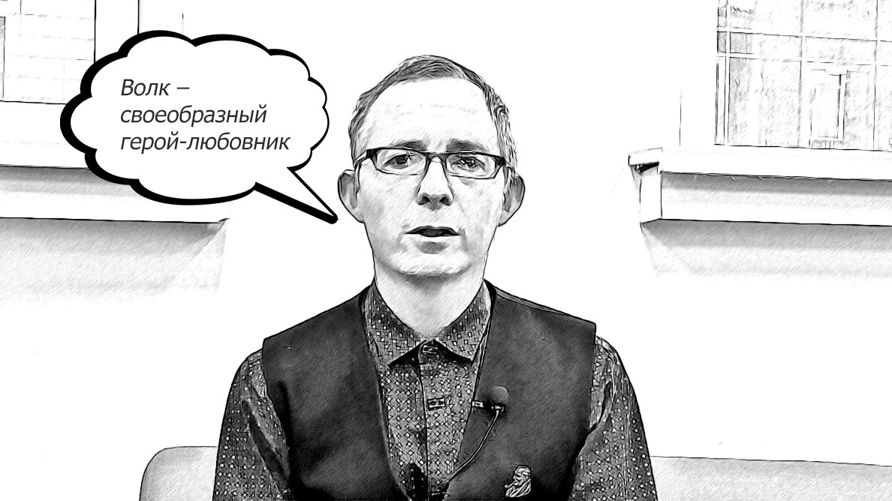
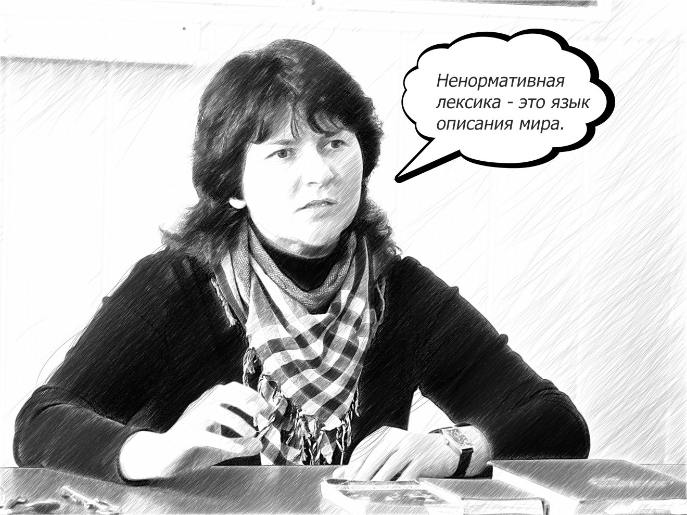
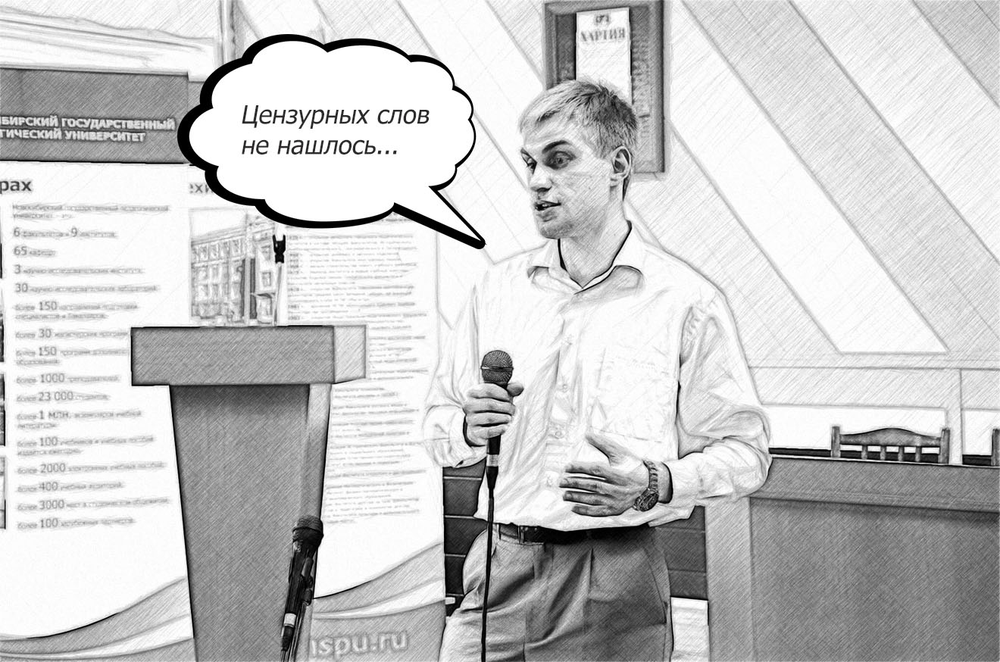

Она видела волка
Мат - не так прост, как некоторые могут думать. У него есть своя история. Ксения Юдакова и Диана Селиверстова подготовили интервью с несколькими спикерами: Козлов Алексей, Муратова Наталья, Евгений Соснин. Наши эксперты подробно рассказали про разные этапы развития нецензурной лексики.

Евгений Соснин - кандидат филологических наук, главный библиотекарь отдела художественной литературы, председатель историко-литературного клуба любителей творчества Дж.Р.Р. Толкина «Эленарда»
Откуда и как появился мат?
Ненормативная лексика сложная по своему происхождению. В ней есть ряд слов, которые когда-то не были ненормативными или же они обозначали иные понятия. Очень важную роль в обсценной лексике играют заклинания и словесная магия, которые были направлены на управление духами. Соответственно, рассматривать это с точки зрения лексики, то мы увидим совершенно чёткие истоки. Во-первых, почему она стала нормативной и ненормативной? Потому что когда-то была связана с языческими представлениями. После христианизации подобная лексика меняла свой знак с положительного на отрицательный. Поэтому всё, что было связано с язычеством, подвергалось запретам. Во-вторых, табуизация в язычестве тоже играла важную роль, потому что нельзя было напрямую называть духов, чтобы их не вызвать.
Если рассматривать само слово “мат”, оно очень похоже на слово “мать”. Это породило представление о том, что материться — значит оскорблять мать. Но это не совсем верно. Слово “мат” также встречается в выражении “благим матом”, то есть буквально — очень громко. Первоначально мат представлял собой громкий сильный крик. Им запугивали духов. Но также существовали запреты в его употреблении. Например, если приходите в лес, вы не должны кричать, чтобы не потревожить духов.
Затем “мат” переосмысляется в сторону значения “ругать мать”, и это становится дальнейшим источником объяснения, почему нельзя материться. Но, в древней Руси, глагол “материться” не использовался, вместо этого был глагол “лаять”. Существовало и специальное выражение “злая лая матерная”. То есть это ругань, подобная тому, как лают собаки.
Кстати, собака, в отличие от волка, обладала более сниженным смысловым значением. Волков же многие народы почитали как сакральное животное. А собака в этом отношении считалась нечистым животным и применялась в речах лишь к холопам, то есть людям низкого статуса. Соответственно, в европейских языках слово “собака” могло применяться к женщинам легкого поведения. Считалось, что собака, как и волк, воплощает в себе сексуальный мир. В латинском значении публичные дома буквально называли “волчий дом”.
Мы часто видим, что ненормативная лексика связана с темой деторождения. В язычестве это тоже считалось сакральной темой, но она не была так сильно табуирована, потому что в те времена преобладал культ плодородия, который всегда был связан с сексуальной символикой. Многие животные были их воплощением. Например, медведь в европейских языках несет значение полового возбуждения. И не даром есть сказки по типу “Маша и медведь”. Это как раз остатки культовых жертвоприношений, в данном случае, женщина — медведю для сожительства. Во французском языке есть выражение “она видела волка” (elle a vu le loup) — это значит, что у девушки уже был первый сексуальный контакт. Отсюда и сказка про “Красную шапочку”, которая у Шарля Перро носила явно сексуальный характер. Волк — это своеобразный герой-любовник.
Следующее слово (хуй) одного корня со словом “коя” по форме. Первоначально корень “кой”, который обозначает жизнь, напрямую связан с репродуктивностью, отсюда вытекает английское слово quick — быстрый, живой. Это слово было табуировано, потому что оно начало обозначать вещи, которые потом стали выводиться вне сферы социальной культуры. Здесь важную роль играют не только сакральные аспекты, но и развитие культуры, потому что она в принципе, направлена на усмирение эмоций.
Слово, обозначающее блудливую женщину, по своему происхождению является старославянским, оно одного корня со словом “блудить”. Блудница — это более позднее образование, которое сохранило старое значение, потому что оно этимологически связано с английским словом blind — слепой, а также с греческим словом планета, то есть блуждающая. Потому что слепой — это блуждающий или тот, кто заблуждается.
Обозначение “блудница” в старославянском языке имело значение болтуньи. То есть несдержанной на язык и, соответственно, в поведении. Женщин могли называть распущенными, потому что они, например, ходили с распущенными волосами или не подпоясанные. Отсюда и вытекала связь с неспособностью себя контролировать. С развитием семантики данного слова оно стало табуированным.
По этому признаку инвективы могут отличаться в разных языках. В американской культуре, с нашей точки зрения, много ненормативной лексики. Это потому, что у них сфера запретов была связана с религией и, соответственно, матом считается упоминание религиозных символов. Оскорбление святынь считается более страшным, чем употребление обычных слов по типу “fuck” и т. д. В нашей культуре наоборот, поскольку церковь была отделена от государства, инвективы ушли в сексуальную сторону. Кстати говоря, знаменитое выражение “твою мать”, является сокращением от более полного выражения с глаголом, обозначающим начать совокупление. По некоторым предположениям, первоначально было выражение “татарин твою мать”, то есть с намеком на инородческое происхождение.
Слово, обозначающее женский половой орган имеет очень интересную историю. Если открыть этимологический словарь индоевропейских языков Юлиуса Покорного, то можно обнаружить, что там это слово есть. И более того, оно не изменило свою форму за 5000 лет существования индоевропейских языков. То есть, как оно звучало в праиндоевропейском языке, так и сейчас звучит в русском. Его противоположное слово “пест” — то, что вставляется, а “пизда” — это то, куда вставляется. И это слово не изменилось никак. Я могу предположить, что это связано с родовой и сакральной ролью женщины, культ Богини Матери-природы потерял свою актуальность, особенно у нас в стране. Например, Родина-Мать.
Существует монография, которая называется “Тропой звериных слов”, автор В.М. Михайлин. Это фундаментальное исследование инвективов. В нем говорится о “речи животных”, что греки называют “барбариан”, то есть неразборчивая, грубая и агрессивная речь. И уже из этого следует один из первых мотивов, по которому нецензурная лексика должна исторгаться из человеческого языка. Звериный язык связан с грубостью, агрессией и повышенными эмоциями, что не связано с человеческим сознанием и разумом. Это самый главный вред этих слов, потому что по сути, словами они и не являются.
Если рассматривать само слово “мат”, оно очень похоже на слово “мать”. Это породило представление о том, что материться — значит оскорблять мать. Но это не совсем верно. Слово “мат” также встречается в выражении “благим матом”, то есть буквально — очень громко. Первоначально мат представлял собой громкий сильный крик. Им запугивали духов. Но также существовали запреты в его употреблении. Например, если приходите в лес, вы не должны кричать, чтобы не потревожить духов.
Затем “мат” переосмысляется в сторону значения “ругать мать”, и это становится дальнейшим источником объяснения, почему нельзя материться. Но, в древней Руси, глагол “материться” не использовался, вместо этого был глагол “лаять”. Существовало и специальное выражение “злая лая матерная”. То есть это ругань, подобная тому, как лают собаки.
Кстати, собака, в отличие от волка, обладала более сниженным смысловым значением. Волков же многие народы почитали как сакральное животное. А собака в этом отношении считалась нечистым животным и применялась в речах лишь к холопам, то есть людям низкого статуса. Соответственно, в европейских языках слово “собака” могло применяться к женщинам легкого поведения. Считалось, что собака, как и волк, воплощает в себе сексуальный мир. В латинском значении публичные дома буквально называли “волчий дом”.
Мы часто видим, что ненормативная лексика связана с темой деторождения. В язычестве это тоже считалось сакральной темой, но она не была так сильно табуирована, потому что в те времена преобладал культ плодородия, который всегда был связан с сексуальной символикой. Многие животные были их воплощением. Например, медведь в европейских языках несет значение полового возбуждения. И не даром есть сказки по типу “Маша и медведь”. Это как раз остатки культовых жертвоприношений, в данном случае, женщина — медведю для сожительства. Во французском языке есть выражение “она видела волка” (elle a vu le loup) — это значит, что у девушки уже был первый сексуальный контакт. Отсюда и сказка про “Красную шапочку”, которая у Шарля Перро носила явно сексуальный характер. Волк — это своеобразный герой-любовник.
Следующее слово (хуй) одного корня со словом “коя” по форме. Первоначально корень “кой”, который обозначает жизнь, напрямую связан с репродуктивностью, отсюда вытекает английское слово quick — быстрый, живой. Это слово было табуировано, потому что оно начало обозначать вещи, которые потом стали выводиться вне сферы социальной культуры. Здесь важную роль играют не только сакральные аспекты, но и развитие культуры, потому что она в принципе, направлена на усмирение эмоций.
Слово, обозначающее блудливую женщину, по своему происхождению является старославянским, оно одного корня со словом “блудить”. Блудница — это более позднее образование, которое сохранило старое значение, потому что оно этимологически связано с английским словом blind — слепой, а также с греческим словом планета, то есть блуждающая. Потому что слепой — это блуждающий или тот, кто заблуждается.
Обозначение “блудница” в старославянском языке имело значение болтуньи. То есть несдержанной на язык и, соответственно, в поведении. Женщин могли называть распущенными, потому что они, например, ходили с распущенными волосами или не подпоясанные. Отсюда и вытекала связь с неспособностью себя контролировать. С развитием семантики данного слова оно стало табуированным.
По этому признаку инвективы могут отличаться в разных языках. В американской культуре, с нашей точки зрения, много ненормативной лексики. Это потому, что у них сфера запретов была связана с религией и, соответственно, матом считается упоминание религиозных символов. Оскорбление святынь считается более страшным, чем употребление обычных слов по типу “fuck” и т. д. В нашей культуре наоборот, поскольку церковь была отделена от государства, инвективы ушли в сексуальную сторону. Кстати говоря, знаменитое выражение “твою мать”, является сокращением от более полного выражения с глаголом, обозначающим начать совокупление. По некоторым предположениям, первоначально было выражение “татарин твою мать”, то есть с намеком на инородческое происхождение.
Слово, обозначающее женский половой орган имеет очень интересную историю. Если открыть этимологический словарь индоевропейских языков Юлиуса Покорного, то можно обнаружить, что там это слово есть. И более того, оно не изменило свою форму за 5000 лет существования индоевропейских языков. То есть, как оно звучало в праиндоевропейском языке, так и сейчас звучит в русском. Его противоположное слово “пест” — то, что вставляется, а “пизда” — это то, куда вставляется. И это слово не изменилось никак. Я могу предположить, что это связано с родовой и сакральной ролью женщины, культ Богини Матери-природы потерял свою актуальность, особенно у нас в стране. Например, Родина-Мать.
Существует монография, которая называется “Тропой звериных слов”, автор В.М. Михайлин. Это фундаментальное исследование инвективов. В нем говорится о “речи животных”, что греки называют “барбариан”, то есть неразборчивая, грубая и агрессивная речь. И уже из этого следует один из первых мотивов, по которому нецензурная лексика должна исторгаться из человеческого языка. Звериный язык связан с грубостью, агрессией и повышенными эмоциями, что не связано с человеческим сознанием и разумом. Это самый главный вред этих слов, потому что по сути, словами они и не являются.
По некоторым данным, русский язык находится на третьем месте по количеству нецензурных слов, при этом всего, как мы узнали, четыре общеупотребительных корня. Почему же тогда он занимает третье место?
Дело в том, что Запад в этом отношении более либеральный. В отличие от русского языка, в английском нет понятия “литературный язык”. Но есть некие общеевропейские стандарты, которые были сформированы в 20 веке. Интересно, что при формировании парадигмы “Standard”, опирались на британского писателя Джорджа Оруэлла.
Как правило, при заимствовании английских слов происходит подмена понятий. Например, мы говорим “убийца” в значении слова “киллер”, но ведь это уже профессия. Когда мы начинаем подменять наши исконные слова, которые очень прозрачно раскрывают суть явления, на гладкие и нейтральные в английском языке, происходит полное расхождение в их понимании и смысле.
Русский язык, наоборот, обладает нормами, которые имеют более гибкое явление, чем стандарт. Норма напрямую связана с окультуренностью, которая сдерживала “расцвет мата” в рамках. Поэтому он начал свое распространение уже после либерализации, то есть в 20-м веке. Тогда началась эпоха героизации всего этого: мат, развязность и грубость стали признаками хорошего тона.
Как правило, при заимствовании английских слов происходит подмена понятий. Например, мы говорим “убийца” в значении слова “киллер”, но ведь это уже профессия. Когда мы начинаем подменять наши исконные слова, которые очень прозрачно раскрывают суть явления, на гладкие и нейтральные в английском языке, происходит полное расхождение в их понимании и смысле.
Русский язык, наоборот, обладает нормами, которые имеют более гибкое явление, чем стандарт. Норма напрямую связана с окультуренностью, которая сдерживала “расцвет мата” в рамках. Поэтому он начал свое распространение уже после либерализации, то есть в 20-м веке. Тогда началась эпоха героизации всего этого: мат, развязность и грубость стали признаками хорошего тона.
Понятие чистого языка, существует ли оно?
Да. Оно существует. И это понятие нам нужно. Сразу скажу, что эволюция всегда предполагает борьбу противоположностей. Соответственно, любая система эволюционирует при двух условиях. Первое — она соответствует самой себе, то есть закон тождества. И второе — она обладает противоречивыми свойствами. То есть, закон тождества позволяет системе сохраняться, противоречие элементов позволяет ей развиваться. Язык работает точно так же, подчиняется тем же законам. Поскольку он (язык) отражает реальность, значит, в нём отражаются законы физики, астрологии, психологии и так далее. А пурификаторские и новаторские тенденции представляют собой то противоречие, которое позволяет развиваться. Более того, они могут разные эпохи побеждать, то есть меняться местами. Вот, например, древнерусский язык, по своей сути был закрытый. Он плохо пропускал заимствование. Шли, как правило, через кальки, а не через прямое заимствование. Потом, когда язык демократизировался (начиная с XVI века начались демократические тенденции), он открылся влияниям, стали проникать прямые заимствования. Но заимствовать нужно не всё, а только то, что может быть полезно.
Слова, которых ещё нет в словарях называются варваризмами, потому что они ещё не прошли адаптацию. Они должны фиксироваться, например, в дополнениях к словарям. Но только когда они пройдут апробирование, то есть, когда они пройдут через нормы литературного языка, их уже можно будет вносить в словарь. Многие считают, что учёные, филологи придумывают нормы, но это далеко не так. Они их фиксируют. Есть тенденции, которые по-разному себя ведут. И, исходя из этого, происходит кодификация этих самых тенденций.
Слова, которых ещё нет в словарях называются варваризмами, потому что они ещё не прошли адаптацию. Они должны фиксироваться, например, в дополнениях к словарям. Но только когда они пройдут апробирование, то есть, когда они пройдут через нормы литературного языка, их уже можно будет вносить в словарь. Многие считают, что учёные, филологи придумывают нормы, но это далеко не так. Они их фиксируют. Есть тенденции, которые по-разному себя ведут. И, исходя из этого, происходит кодификация этих самых тенденций.
Широкое распространение обсценной лексики
Самая главная причина — это разрушение норм как социальных, так и лингвистических. Потому что язык, мышление и общество взаимосвязаны между собой. Когда в 1990-е годы в России отменили все правила, сославшись на то, что это наследие тоталитарного прошлого, у нас рухнула социальная среда, то есть культурность, а вслед за этим потянулся язык. Также, к власти пришли люди определенных кругов. Криминал стал не просто сленгом и ненормативной лексикой, а бандитской лексикой.
Вторая причина — появление интернета. Потому что средства массовой информации не всегда определяли культурный облик, но интернет более быстрый, он моментальный. Тем более, в основной своей массе не нормируется. Сейчас ты можешь открыть свой блог и вещать всем своим грамотным или не очень языком. И это сразу становится достоянием общественности.
Вторая причина — появление интернета. Потому что средства массовой информации не всегда определяли культурный облик, но интернет более быстрый, он моментальный. Тем более, в основной своей массе не нормируется. Сейчас ты можешь открыть свой блог и вещать всем своим грамотным или не очень языком. И это сразу становится достоянием общественности.

Муратова Наталья Александровна - кандидат филологических наук, доцент кафедры русской литературы и методики обучения литературе.
Во всех языках есть тот самый словарный раздел, который касается обсценной лексики. В европейскую литературу она вошла еще в эпоху Возрождения вместе с другими каналами культуры, ярким представителем является произведение “Гаргантюа и Пантагрюэль” французского писателя Франсуа Рабле. В 20 веке достаточно далеко отодвигаются рамки нормативности. Авторы перестают транслировать “прекрасный мир” с его “прекрасным языком”. Для аутентичности языковой среды и культурного контекста, для убедительности репрезентации персонажа в большинстве случаев используется ненормативная лексика. В литературе она фигурирует очень часто, в этом смысле она более свободна, в отличие от театра и кино. Зачастую, подобная лексика в творчестве писателей выступает не как объект цензуры, а является знаком определенной среды, типа персонажа, культуры, иногда и субкультуры.
В таком случае, может ли это считается маркером агрессии?
В художественном тексте не может, но это можно считать маркером агрессии самого персонажа, а можно и не считать. На данный момент ненормативная лексика – это язык описания мира. Он уже не маркирован как особая табуированная часть языка.
А что касается трудностей перевода зарубежных произведений, которые содержат в себе ненормативную лексику?
При переводе любого текста, содержащего подобную лексику подбирается система эквивалентов в русском языке. Иногда, если это сериальная культура, начинается некая игра для русского читателя. Редакторы этих переводов придумывают какие-то аналоги, чтобы персонаж соответствовал самому себе в оригинале, и выглядел в другом языке, за счет его ресурса, примерно таким же, каким он является на самом деле. Если нет эквивалента именно в лексическом значении, находится семантический или смысловой, попадание в какой-то эмоциональный регистр. Не обязательно это может переводится именно обсценной лексикой, потому что многое зависит от традиций и культуры народов. Проблема перевода с одного языка на другой всегда будет актуальной. Например, если персонаж книги или кино употребил ненормативную лексику, это должен переведено, но иногда, в каком-то контексте, это может быть совершенно нейтральным выражением в ситуации перевода.

Козлов Алексей Евгеньевич - кандидат филологических наук, преподаватель кафедры русской и зарубежной литературы, теории литературы и методики обучения литературе.
Функции ненормативной лексики
Обсценная лексика изначально связана со сферой именно фольклорной, заветной, как ее называл Владимир Даль, то есть маргинальной, а не письменной и официальной. Уже поэтому обращение к мату в литературных текстах придавало принципиально новые краски, принципиально меняло акценты. Почему так? Если в разговорной повседневной речи зачастую использование обсценной лексики избыточно, не связано ни со словотворчеством, ни со стилизацией, ни с другими эстетическими функциями языка и речи, то в художественной литературе любое слово обретает дополнительную семантику.
Для одних писателей обращение к матерной лексике было частью их имиджа, яркий пример — стихотворец XVIII века Иван Семенович Барков и созданная его почитателями барковиана. Для других — форма игры, уместная в низких жанрах. Вспомним пресловутые эпиграммы Александра Пушкина (например, “Эпиграмма на Стурдзу”, “В Академии наук Заседает князь Дундук”), юнкерские поэмы Лермонтова или стихотворение “Кнут” апологета русского языка, русской речи Ивана Тургенева.
Другая проблема касается некоторых апокрифов, когда писателям приписываются тексты, им не принадлежащие. Классический пример — это тексты, атрибутируемые Маяковскому. Есть у него замечательное стихотворение “Вам”, эпатирующее своим последним восклицанием, есть немало других, действительно принадлежащих ему текстов с ненормативной лексикой. Но ушедшее в народ “Вы любите розы”, с оппозицией природы и металлургии, никакого отношения к лирике Маяковского не имеет, являясь банальной стилизацией.
С чем это может быть связано? В советское время обсценизмы русских писателей прикрывались стыдливым многоточием, и читатели часто заполняли эти лакуны по своему усмотрению, искажая авторские тексты чрезмерно вольными читательскими интерпретациями. Так рождался новый фольклор.
Для одних писателей обращение к матерной лексике было частью их имиджа, яркий пример — стихотворец XVIII века Иван Семенович Барков и созданная его почитателями барковиана. Для других — форма игры, уместная в низких жанрах. Вспомним пресловутые эпиграммы Александра Пушкина (например, “Эпиграмма на Стурдзу”, “В Академии наук Заседает князь Дундук”), юнкерские поэмы Лермонтова или стихотворение “Кнут” апологета русского языка, русской речи Ивана Тургенева.
Другая проблема касается некоторых апокрифов, когда писателям приписываются тексты, им не принадлежащие. Классический пример — это тексты, атрибутируемые Маяковскому. Есть у него замечательное стихотворение “Вам”, эпатирующее своим последним восклицанием, есть немало других, действительно принадлежащих ему текстов с ненормативной лексикой. Но ушедшее в народ “Вы любите розы”, с оппозицией природы и металлургии, никакого отношения к лирике Маяковского не имеет, являясь банальной стилизацией.
С чем это может быть связано? В советское время обсценизмы русских писателей прикрывались стыдливым многоточием, и читатели часто заполняли эти лакуны по своему усмотрению, искажая авторские тексты чрезмерно вольными читательскими интерпретациями. Так рождался новый фольклор.
Мат - средство выразительности или индикатор агрессии?
Повторюсь: у обсценной лексики могут быть очень разные функции, когда мы говорим о повседневной жизни, это может быть связано не только с агрессией, но и социальной идентификацией. Поэтому, например, в речи подростков очень часто встречается некая попытка заявить: “Я свой, я такой же!”. Но когда это способствует бедности речи, это совершенно бессмысленно. Иногда мат можно считать индикатором агрессии, но не в сфере художественного творчества и литературы.
Война и мат
Мат в литературе — это средство эстетической выразительности. Вспомните, как в “Война и мир” Толстого в одном из последних эпизодов, описывающих Кутузова, представляет его обращение к простым солдатам (том 4, часть 4, глава 7). И это обращение практически полностью состоит из бранной лексики. Это очень важный парадоксальный эффект. Ведь мы, условные читатели Толстого, привыкли видеть его (Кутузова) полководцем на коне. А вот здесь он общается такой речью, которая будет всем понятна (до этого подобные слова звучат из уст крестьян и солдат) и будет наилучшим образом раздвигать стилевые границы.
У А. Твардовского в поэме “Тёркин на том свете” говорится, что газеты гласят о том, что все умирают за родину, за Сталина. Но мы-то понимаем, с какими словами на самом деле люди идут в атаку, с какими словами они умирают.
У А. Твардовского в поэме “Тёркин на том свете” говорится, что газеты гласят о том, что все умирают за родину, за Сталина. Но мы-то понимаем, с какими словами на самом деле люди идут в атаку, с какими словами они умирают.
“— Без печати нам с тобой
Знато-перезнато,
Что в бою — на то он бой —
Лишних слов не надо.
Что вступают там в права
И бывают кстати
Больше прочих те слова,
Что не для печати…”
Знато-перезнато,
Что в бою — на то он бой —
Лишних слов не надо.
Что вступают там в права
И бывают кстати
Больше прочих те слова,
Что не для печати…”
Вот эти слова не предназначены для печати, но заключают в себе, совершенно другой уровень искренности. И, например, когда В. Астафьев в книге “Прокляты и убиты”, писал о самых неприглядных сторонах войны, здесь, уже порой, тоже без этой лексики невозможно было обойтись. (“Не спать! Не спа-ать! Я вас, бл*дство, все одно научу владеть оружием! Не спа-ать!” - отрывок из романа “Прокляты и убиты”).
Близким к военной повседневности оказался лагерь. Вспомним способ актуализации матерной речи у А.И. Солженицына. Автор приводит эвфемизмы, заменяя букву Х на букву Ф, и появляются все эти “маслице - фуяслице”, “поднимется - фуимется”. Видимо, цензурных слов для описания такой жизни не нашлось.
Близким к военной повседневности оказался лагерь. Вспомним способ актуализации матерной речи у А.И. Солженицына. Автор приводит эвфемизмы, заменяя букву Х на букву Ф, и появляются все эти “маслице - фуяслице”, “поднимется - фуимется”. Видимо, цензурных слов для описания такой жизни не нашлось.
Вторая половина XX века
Конечно, мат традиционно распространяется в неподцензурной литературе. Яркий тому пример — самиздат XX века, который изначально уже мог оперировать самыми разными регистрами, которыми подцензурная литература оперировать не могла. По таким законам существует бессмертная поэма Венедикта Ерофеева “Москва-Петушки”, где используется и церковные архаизмы, и высокий литературный стиль, и городское просторечие, и обсценизмы. Но при этом Ерофеев тоже мистифицирует читателя, говоря о том, что вся глава “Серп и молот” представляла собой “полторы страницы чистейшего мата”. Но это мистификация! И если такая потребность самовыражения возникала, писатель самизадата вполне мог ее удовлетворить.
Поэтому Венедикт Ерофеев, Саша Соколов, Сергей Довлатов, существуя в самиздате, не ограничивали свою речь только нормативными словами. Зачастую это действительно способствовало эстетическому эффекту, раскрепощало излишне бюрократизированный, дистиллированный советской действительностью язык. Собственно, то, что в прозе постмодерна используется обсценная лексика — является продолжением той же линии самиздата. Это такой же маркер свободы, ничем не ограниченного слова, пробивающего себе дорогу. И, конечно, апогеем этого были 90-е годы, когда рухнула советская действительность, советская цензура, ограничивающая свободу, и возникла возможность для выражения самых разных мыслей в самых разных формах, в том числе с использованием матерной лексики. Это касалось и критики политического строя, и обсуждения насущных социальных проблем, и способов существования культуры. И пока использование мата не становилось самоцелью, а было только одним из средств, одним из инструментов постижения действительности — это было абсолютно здоровым состоянием художественной литературы. Когда текст сводится целиком и полностью к порождению таких слов, тогда уже всё не очень благополучно обстоит. То есть когда пишет что-то Сергей Шнуров получается весело и озорно, порой точнее не скажешь. А какой-нибудь эпигон на Стихи.ру превращает этот живой язык в собрание дурно пахнущих, омертвевших слов.
Но лично мне кажется, что гораздо большую опасность представляет собой отнюдь не обсценная лексика в литературе, а так называемый “язык пацанства”, который в свое время проник и в культуру, и в высшие эшелоны власти. И когда очень небрежно по очень серьезным вопросам, связанным с человеческой судьбой и судьбой страны, мира и человечества, люди начали высказываться пусть не матерными словами, но словами, которые демонстрировали какое-то нарочитое пренебрежение, возникла очень серьезная опасность. Вот, на мой взгляд, между двух этих зол гораздо более страшное явление представляет собой “язык пацанства”.
Поэтому Венедикт Ерофеев, Саша Соколов, Сергей Довлатов, существуя в самиздате, не ограничивали свою речь только нормативными словами. Зачастую это действительно способствовало эстетическому эффекту, раскрепощало излишне бюрократизированный, дистиллированный советской действительностью язык. Собственно, то, что в прозе постмодерна используется обсценная лексика — является продолжением той же линии самиздата. Это такой же маркер свободы, ничем не ограниченного слова, пробивающего себе дорогу. И, конечно, апогеем этого были 90-е годы, когда рухнула советская действительность, советская цензура, ограничивающая свободу, и возникла возможность для выражения самых разных мыслей в самых разных формах, в том числе с использованием матерной лексики. Это касалось и критики политического строя, и обсуждения насущных социальных проблем, и способов существования культуры. И пока использование мата не становилось самоцелью, а было только одним из средств, одним из инструментов постижения действительности — это было абсолютно здоровым состоянием художественной литературы. Когда текст сводится целиком и полностью к порождению таких слов, тогда уже всё не очень благополучно обстоит. То есть когда пишет что-то Сергей Шнуров получается весело и озорно, порой точнее не скажешь. А какой-нибудь эпигон на Стихи.ру превращает этот живой язык в собрание дурно пахнущих, омертвевших слов.
Но лично мне кажется, что гораздо большую опасность представляет собой отнюдь не обсценная лексика в литературе, а так называемый “язык пацанства”, который в свое время проник и в культуру, и в высшие эшелоны власти. И когда очень небрежно по очень серьезным вопросам, связанным с человеческой судьбой и судьбой страны, мира и человечества, люди начали высказываться пусть не матерными словами, но словами, которые демонстрировали какое-то нарочитое пренебрежение, возникла очень серьезная опасность. Вот, на мой взгляд, между двух этих зол гораздо более страшное явление представляет собой “язык пацанства”.
Автор: Ксения Юдакова и Диана Селивестова